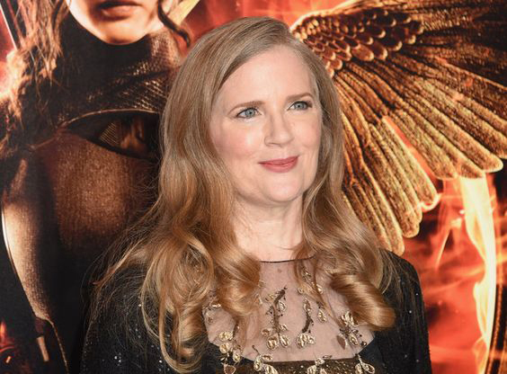

In 2008, Collins wrote the young-adult dystopian novel The Hunger Games. Collins claims that her early exposure to Greek mythology, especially the story of Theseus and the minotaur, planted seeds in her mind for the story. It wasn't until much later, when she was flipping between war coverage and reality T.V. programming, that Katniss Everdeen's story finally came to her. Not only this, but since her father was in the Vietnam War she also took those experiences and used them as inspiration for her book. In 2009, Collins released the sequel to The Hunger Games, Catching Fire. The final book in the trilogy, Mockingjay, was released in 2010.
Is an American screenwriter, director, and producer. The Hunger Games is the third feature film that he has directed following Pleasantville and Seabiscuit, both of which he also produced.On April 10, 2012, Ross released a joint statement with Lions Gate Entertainment announcing that he will not be directing the sequel to The Hunger Games. He cited the time needed to write and prep the movie given its tight production schedule as the deciding factor.
Francis Lawrence is an American/Austrian music video, TV, and film director. He was announced to be the new director of The Hunger Games: Catching Fire after Gary Ross, director of The Hunger Games film, bowed out of directing the sequel. Lawrence was first reported to be the The Hunger Games: Catching Fire director on April 19, 2012 and was confirmed on May 3. Previous feature films directed by Lawrence include the sci-fi hit I Am Legend and Water for Elephants. He has also directed over 180 music videos.